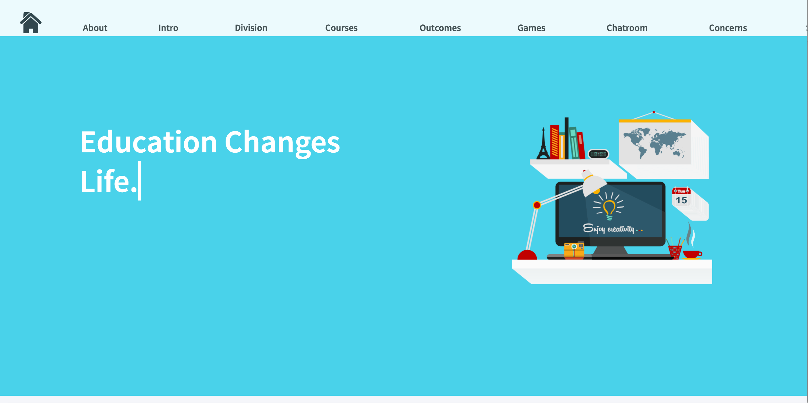

Claudia Chen's Online School
May 12, 2017


I’m so intrigued with was is going on to help the children in education. One of my peers Claudia Chen wants to make a contribution to children’s education. She wants to create a website that highlights educational content. She wants to make it fun and interactive, because her target audience are children. She achieves that goal with her color palette, and her illustrations. Her website highlights what she wants the website to be headed.
She believes that children should have access to education no matter their background, and financial status. I support her idea, and I know that with support and sharing her website will be a success. Dive in Deeper by clicking below.